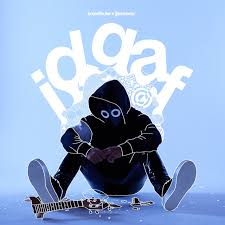
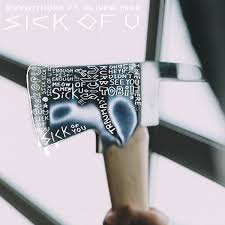
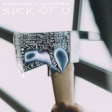

2021-2022
2021-2022: firma con Republic Records y Serotonin Dreams
A finales de 2021, Yang firmó un contrato con el sello discográfico Republic Records . [9] En 2022, lanzó el sencillo " IDGAF ", con Blackbear . [10] Lanzó su álbum debut con un sello importante, Serotonin Dreams , bajo Republic Records. [9] Debutó en el puesto número 7 en las listas Billboard Alternative Airplay y Billboard 200 y presenta "Toxic" como sencillo principal. [5] [11] Después del lanzamiento del álbum, BoyWithUke fue catalogado como uno de los diez mejores artistas emergentes de Billboard . [11] El 30 de septiembre de 2022, lanzó el sencillo "Sick of U" con Oliver Tree . [12]
A lo largo de 2022, Yang abrió para el trío de indie-pop AJR en su gira de su cuarto álbum de estudio OK Orchestra . [13]
En octubre de 2023, tiene casi ocho millones de seguidores en TikTok y más de dos mil millones de reproducciones en Spotify [14] y 870 millones de visitas en YouTube. [15]
  

IDGAF serotonin dreamsc sick of u